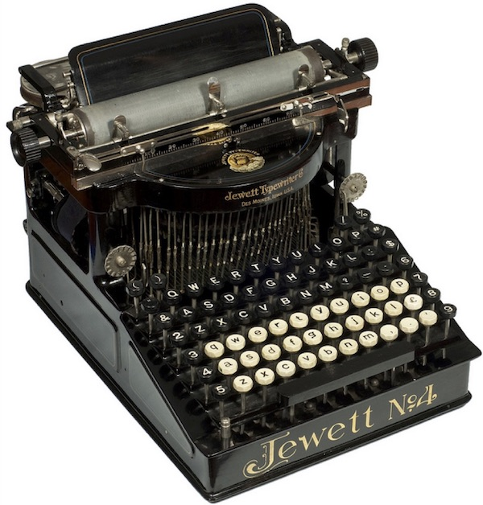
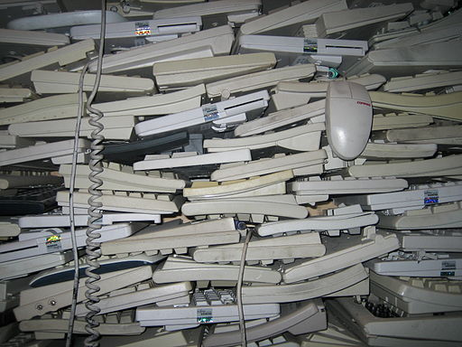
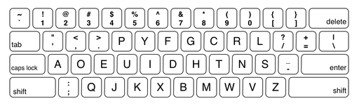
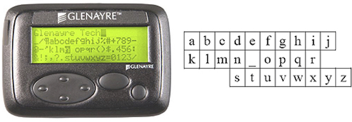
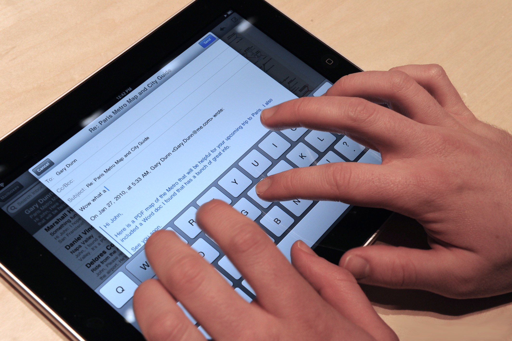
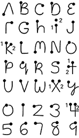
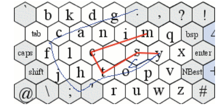

Just as pointing is a nearly ubiquitous form of non-verbal communication, text is a ubiquitous form of verbal communication. Every single character we communicate to friends, family, coworkers, and computers—every tweet, every Facebook post, every email—leverages some form of text-entry user interface. These interfaces have one simple challenge: support a person in translating the verbal ideas in their head into a sequence of characters that are stored, processed, and transmitted by a computer.
If you're reading this, you're already familiar with common text-entry interfaces. You've almost certainly used a physical keyboard, arranged with physical keys labeled with letters and punctuation. You've probably also used a virtual on-screen keyboard, like those in smartphones and tablets. You might even occasionally use a digital assistant's speech recognition as a form of text entry. And because text-entry is so frequent a task with computers, you probably also have very strong opinions about what kinds of text-entry you prefer: some hate talking to Siri, some love it. Some still stand by their physical Blackberry keyboards, others type lightning fast on their Android phone's virtual on-screen keyboard. And some like big bulky clicky keys, while others are fine with the low travel of most thin modern laptop keyboards.
What underlies these strong opinions? A large set of hidden complexities. Text entry needs to support letters, numbers, and symbols across nearly all of human civilization. In Unicode 6.0, there are 109,384 distinct symbols that people can enter into a computer. It needs to be fast enough to move at the speed of thought. It needs to be error-free, and when errors do occur, it needs to help a user rapidly recover from and correct them, so they can focus on what they're saying, not on the low-level mechanics of fixing a character. People also need to learn text entry interfaces, just like they learn handwriting, keyboarding, speech, and other forms of verbal communication. But people also need to be comfortable while they're entering text: it shouldn't hurt, it shouldn't cause fatigue, and most importantly it should be possible. Many people with injuries or disabilities (e.g., someone who is fully paralyzed) may find it excruciatingly difficult to enter text. The ever-smaller devices in our pockets and on our wrists only make this harder, reducing the usable surfaces for comfortable text entry.

The history of text entry interfaces predates computers (Silfverberg 2007). For example, typewriters like the Jewett No. 4 shown above had to solve the same problem as modern computer keyboards, but rather than storing the sequence of characters in computer memory, they were stored on a piece of paper with ink. Typewriters like the Jewett No. 4 and their QWERTY keyboard layout emerged during the industrial revolution when the demand for text increased.
Of course, the difference between mechanical text entry and computer text entry is that computers can do so much more to ensure fast, accurate, and comfortable experiences. Researchers have spent several decades exploiting computing to do exactly this. This research generally falls into three categories: techniques that leverage discrete input, like the pressing of a physical or virtual key, techniques that leverage continuous input, like gestures or speech, and statistical techniques that attempt to predict the text someone is typing to automate text entry.

Discrete text input involves entering a single character or word at a time. We refer to them as discrete because of the lack of ambiguity in input: either a button is pressed and a character or word is generated, or it is not. The most common and familiar forms of discrete text entry are keyboards. Keyboards come in numerous shapes and sizes, both physical and virtual, and these properties shape the speed, accuracy, learnability, and comfort of each.
Keyboards can be as simple as 1-dimensional layouts of characters, navigated with a left, right, and select key. These are common on small devices where physical space is scarce. Multiple versions of the iPod, for example, used 1-dimensional text entry keyboards because of its one dimensional click wheel.
Two-dimensional keyboards like the familiar QWERTY layout are more common. And layout matters. The original QWERTY layout, for example, was designed to minimize mechanical failure, not speed or accuracy. The Dvorak layout was designed for speed and it, places the most common letters in the home row and maximizes alternation between hands (Dvorak and Dealey 1936):

Not all two-dimensional keyboards have a 1-to-1 mapping from key to character. Some keyboards are virtual, with physical keys for moving an on-screen cursor:

Cell phones in the early 21st century used a multitap method in which each key on a numeric keyboard mapped to three or four letters. To select the letter you wanted, you would press a key multiple times until the desired letter is displayed. A letter was entered when a new key was struck. If the next letter is on the same key as the previous letter, then the user must wait for a short timeout or hold down the key to commit the desired character. Some researchers sped up multitap techniques like this by using other sensors, such as tilt sensors, making it faster to indicate a character (Wigdor and Balakrishnan 2003). Other researchers explored even more efficient forms of text entry with minimal keys, including one with only 4 keys, where characters are uniquely encoded as sequences of presses of those four keys (MacKenzie et al. 2011). On particularly small devices like smartwatches, some researchers have explored having the user move the keyboard to select the character they want (Shibata et al. 2016). Other approaches include portable Bluetooth-connected chording keyboards like the Twiddler, which can be customized for rapid text entry.
Some keyboards are eyes-free. For example, long used in courtrooms, stenographers who transcribe human speech in shorthand have used chorded keyboards called stenotypes:
With 2-4 years of training, some stenographers can reach 225 words per minute. Researchers have adapted these techniques to other encodings, such as braille, to support non-visual text entry for people who are blind or low-vision (Azenkot et al. 2012)
On-screen virtual keyboards like those found in modern smartphones introduce some degree of ambiguity into the notion of a discrete set of keys, because touch input can be ambiguous. Some researchers have leveraged additional sensor data to disambiguate which key is being typed, such as which finger is typically used to type a key (Choi et al. 2015). Other approaches have studied how users conceptualize touch input, allowing for more accurate target acquisition (Holz and Baudisch 2011).

The primary benefit of the discrete input techniques above is that they can achieve relatively fast speeds and low errors because input is reliable: when someone presses a key, they probably meant to. But this is not always true, especially for people with motor impairments that reduce stability of motion. Moreover, there are many people that cannot operate a keyboard comfortably or at all, many contexts in which there simply isn't physical or virtual space for keys, and many people who do not want to learn an entire new encoding for entering text.
Continuous input is an alternative to discrete input, which involves providing a stream of data as input, which the computer than translates into characters or words. This helps avoid some of the limitations above, but often at the expense of speed or accuracy. For example, popular in the late 1990's, the Palm Pilot used a unistroke gesture alphabet for text entry. It did not require a physical keyboard, nor did it require space on screen for a virtual keyboard. Instead, users learned a set of gestures for typing letters, numbers, and punctuation.

This wasn't particularly fast or error-free, but it was relatively learnable and kept the Palm Pilot small.
Researchers envisioned other improved unistroke alphabets. Most notably, the EdgeWrite system was designed to stabilize the motion of people with motor impairments by defining gestures that traced around the edges and diagonals of a square (Wobbrock et al. 2003). This way, even if someone had motor tremors that prevented fine motor control, they could still accurately enter text. EdgeWrite has been tested on desktops, mobile devices, joysticks, and even tiny vibrotactile displays like smartwatches (Liao et al. 2016).
Whereas the unistroke techniques focus on entering one character at a time, others have explored strokes that compose entire words. Most notably, the SHARK technique allowed users to trace across multiple letters in a virtual keyboard layout, spelling entire words in one large stroke (Kristensson and Zhai 2004):

Researchers have built upon this basic idea, allowing users to use two hands instead of one for tablets (Bi et al. 2012), allowing unused parts of the gesture space for creative expression (Alvina et al. 2016), and optimizing the layout of keyboards using Fitts' law for speed (Rick 2010).
As interfaces move increasingly away from desktops, laptops, and even devices, researchers have investigated forms of text-entry that involve no direct interaction with a device at all. This includes techniques for tracking the position and movement of fingers in space for text entry (Yi et al. 2015):
Other techniques leveraging spatial memory of keyboard layout for accurate text input on devices with no screens (Chen et al. 2014), and eyes-free entry of numbers (Azenkot et al. 2013).
Handwriting and speech recognition have also long been a goal in research and industry. While both continue to improve, and speech recognition in particular becomes ubiquitous, both continue to be plagued by recognition errors. People are finding many settings in which these errors are tolerable (or even fun!), but they have yet to reach levels of accuracy to be universal, preferred methods for text entry.
The third major approach to text entry has been predictive input, in which a system simply guesses what a user wants to type based on some initial information. This technique has been used in both discrete and continuous input, and is relatively ubiquitous. For example, before smartphones and their virtual keyboards, most cellphones offered a scheme called T9, which would use a dictionary and word frequencies to predict the most likely word you were trying to type.
These techniques leverage Zipf's law, an empirical observation that the most frequent words in human language are exponentially more frequent than the less frequent words. The most frequent word in English ("the") accounts for about 7% of all words in a document, and the second most frequent word ("of") is about 3.5% of words. Most words rarely occur, forming a long tail of low frequencies.
This law is valuable because it allows techniques like T9 to make predictions about word likelihood. Researchers have exploited it, for example, to increase the relevance of autocomplete predictions (MacKenzie et al. 2001), and even to recommend entire phrases rather than just words (Arnold et al. 2016). These techniques are widely used in speech and handwriting recognition to increase accuracy, and are now ubiquitous in smartphone keyboards.
Our brief tour through the history of text entry reveals a few important trends:
As the world continues to age, and computing moves into every context of our lives, text entry will have to adapt to these shifting contexts and abilities. For example, we will have to figure out how to efficiently enter text in augmented and virtual realities, which may require require more sophisticated and efficient ways of correcting errors in speech recognition. Therefore, while text entry may seem like a well-explored area of user interfaces, every new interface we invent demands new forms of text input.
Jessalyn Alvina, Joseph Malloch, and Wendy E. Mackay. 2016. Expressive Keyboards: Enriching Gesture-Typing on Mobile Devices. In Proceedings of the 29th Annual Symposium on User Interface Software and Technology (UIST '16). ACM, New York, NY, USA, 583-593.
Kenneth C. Arnold, Krzysztof Z. Gajos, and Adam T. Kalai. 2016. On Suggesting Phrases vs. Predicting Words for Mobile Text Composition. In Proceedings of the 29th Annual Symposium on User Interface Software and Technology (UIST '16). ACM, New York, NY, USA, 603-608.
Shiri Azenkot, Cynthia L. Bennett, and Richard E. Ladner. 2013. DigiTaps: eyes-free number entry on touchscreens with minimal audio feedback. In Proceedings of the 26th annual ACM symposium on User interface software and technology (UIST '13). ACM, New York, NY, USA, 85-90.
Shiri Azenkot, Jacob O. Wobbrock, Sanjana Prasain, and Richard E. Ladner. 2012. Input finger detection for nonvisual touch screen text entry in Perkinput. In Proceedings of Graphics Interface 2012 (GI '12). Canadian Information Processing Society, Toronto, Ont., Canada, Canada, 121-129.
Xiaojun Bi, Ciprian Chelba, Tom Ouyang, Kurt Partridge, and Shumin Zhai. 2012. Bimanual gesture keyboard. In Proceedings of the 25th annual ACM symposium on User interface software and technology (UIST '12). ACM, New York, NY, USA, 137-146.
Xiang 'Anthony' Chen, Tovi Grossman, and George Fitzmaurice. 2014. Swipeboard: a text entry technique for ultra-small interfaces that supports novice to expert transitions. In Proceedings of the 27th annual ACM symposium on User interface software and technology (UIST '14). ACM, New York, NY, USA, 615-620.
Daewoong Choi, Hyeonjoong Cho, and Joono Cheong. 2015. Improving Virtual Keyboards When All Finger Positions Are Known. In Proceedings of the 28th Annual ACM Symposium on User Interface Software & Technology (UIST '15). ACM, New York, NY, USA, 529-538.
Dvorak, A., Merrick, N. L., Dealey, W. L., & Ford, G. C. (1936). Typewriting behavior. New York: American Book Company, 1(6).
Christian Holz and Patrick Baudisch. 2011. Understanding touch. In Proceedings of the SIGCHI Conference on Human Factors in Computing Systems (CHI '11). ACM, New York, NY, USA, 2501-2510.
Per-Ola Kristensson and Shumin Zhai. 2004. SHARK2: a large vocabulary shorthand writing system for pen-based computers. In Proceedings of the 17th annual ACM symposium on User interface software and technology (UIST '04). ACM, New York, NY, USA, 43-52.
Yi-Chi Liao, Yi-Ling Chen, Jo-Yu Lo, Rong-Hao Liang, Liwei Chan, and Bing-Yu Chen. 2016. EdgeVib: Effective Alphanumeric Character Output Using a Wrist-Worn Tactile Display. In Proceedings of the 29th Annual Symposium on User Interface Software and Technology (UIST '16). ACM, New York, NY, USA, 595-601.
I. Scott MacKenzie, Hedy Kober, Derek Smith, Terry Jones, and Eugene Skepner. 2001. LetterWise: prefix-based disambiguation for mobile text input. In Proceedings of the 14th annual ACM symposium on User interface software and technology (UIST '01). ACM, New York, NY, USA, 111-120.
I. Scott MacKenzie, R. William Soukoreff, and Joanna Helga. 2011. 1 thumb, 4 buttons, 20 words per minute: design and evaluation of H4-writer. In Proceedings of the 24th annual ACM symposium on User interface software and technology (UIST '11). ACM, New York, NY, USA, 471-480.
Jochen Rick. 2010. Performance optimizations of virtual keyboards for stroke-based text entry on a touch-based tabletop. In Proceedings of the 23nd annual ACM symposium on User interface software and technology (UIST '10). ACM, New York, NY, USA, 77-86.
Silfverberg, M. (2007). Historical overview of consumer text entry technologies. Chapter 1 in Text Entry Systems: Mobility, Accessibility, Universality, I. S. MacKenzie and K. Tanaka-Ishii (eds). San Francisco: Morgan Kaufmann, pp. 3-25.
Tomoki Shibata, Daniel Afergan, Danielle Kong, Beste F. Yuksel, I. Scott MacKenzie, and Robert J.K. Jacob. 2016. DriftBoard: A Panning-Based Text Entry Technique for Ultra-Small Touchscreens. In Proceedings of the 29th Annual Symposium on User Interface Software and Technology (UIST '16). ACM, New York, NY, USA, 575-582.
Xin Yi, Chun Yu, Mingrui Zhang, Sida Gao, Ke Sun, and Yuanchun Shi. 2015. ATK: Enabling Ten-Finger Freehand Typing in Air Based on 3D Hand Tracking Data. In Proceedings of the 28th Annual ACM Symposium on User Interface Software & Technology (UIST '15). ACM, New York, NY, USA, 539-548.
Daniel Wigdor and Ravin Balakrishnan. 2003. TiltText: using tilt for text input to mobile phones. In Proceedings of the 16th annual ACM symposium on User interface software and technology (UIST '03). ACM, New York, NY, USA, 81-90.
Jacob O. Wobbrock, Brad A. Myers, and John A. Kembel. 2003. EdgeWrite: a stylus-based text entry method designed for high accuracy and stability of motion. In Proceedings of the 16th annual ACM symposium on User interface software and technology (UIST '03). ACM, New York, NY, USA, 61-70.